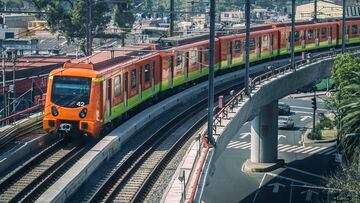

| El metro posee tres tipos de tramos: Subterráneo, Superficial y Elevado y el que tiene
mayor presencia es el subteráneo con 124.697 km, le sigue el superficial con 63.253 km y por último el elevado que solo lo tienen 4 lineas y en total fornam 30.066 km
A continuación se mostrara la tabla para la ilustración |
Lineas |
Subterráneo |
Superficial |
Elevado |
| 1 | 16.786 km | 0.916 km | 0 km |
| 2 | 12.550 km | 9.456 km | 0 km |
| 3 | 18.145 km | 4.449 km | 0 km |
| 4 | 0 km | 1.312 km | 9.435 km |
| 5 | 4.951 km | 10.724 km | 0 km |
| 6 | 11.858 km | 1.146 km | 0 km |
| 7 | 17.754 km | 0.646 km | 0 km |
| 8 | 14.301 km | 5.073 km | 0 km |
| 9 | 9.531 km | 0 km | 4.913 km |
| A | 2.041 km | 15.151 km | 0 km |
| B | 5.380 km | 12.680 km | 4.185 km |
| 12 | 11.400 km | 1.700 km | 11.533 km |
| Total | 124.697 km | 63.253 km | 30.066 km |